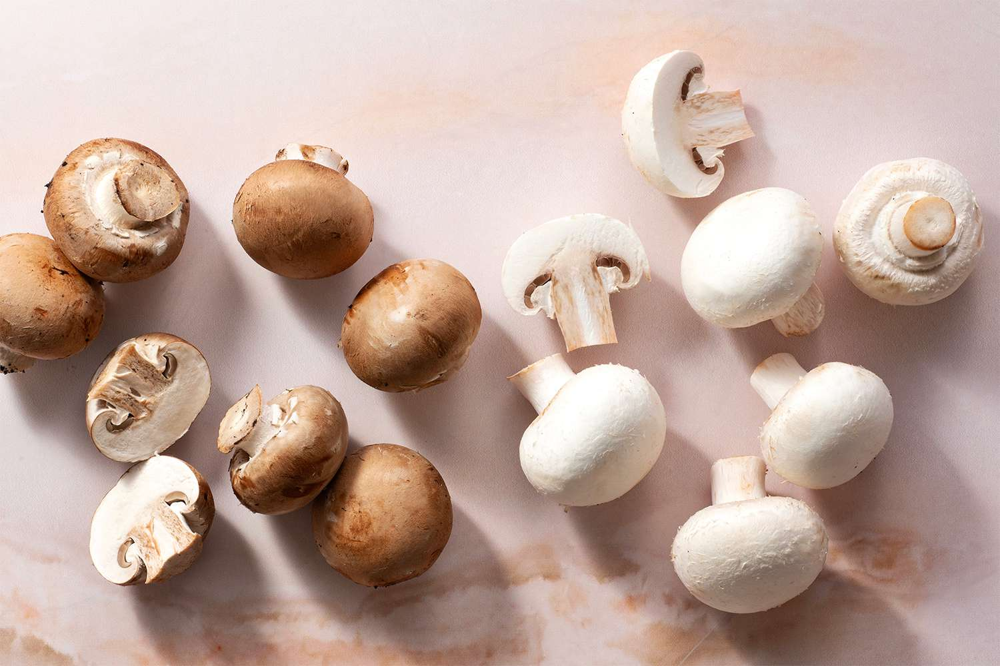
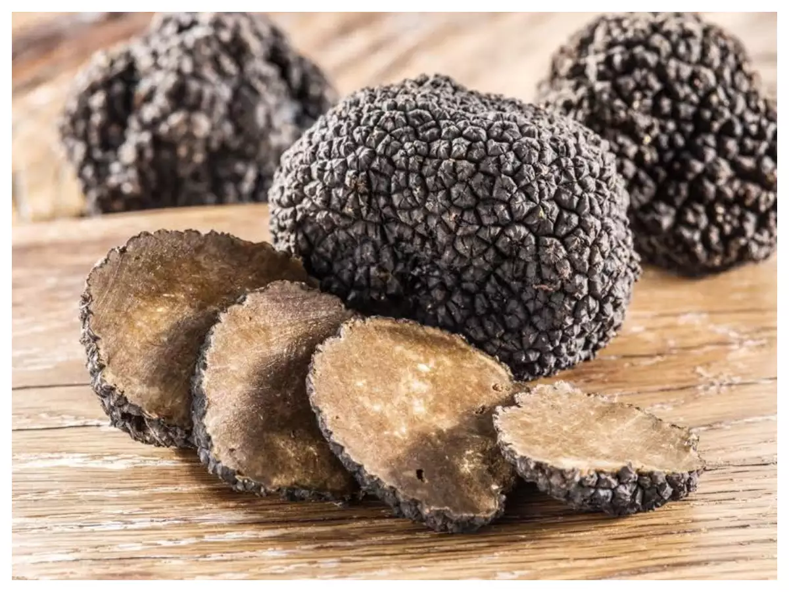
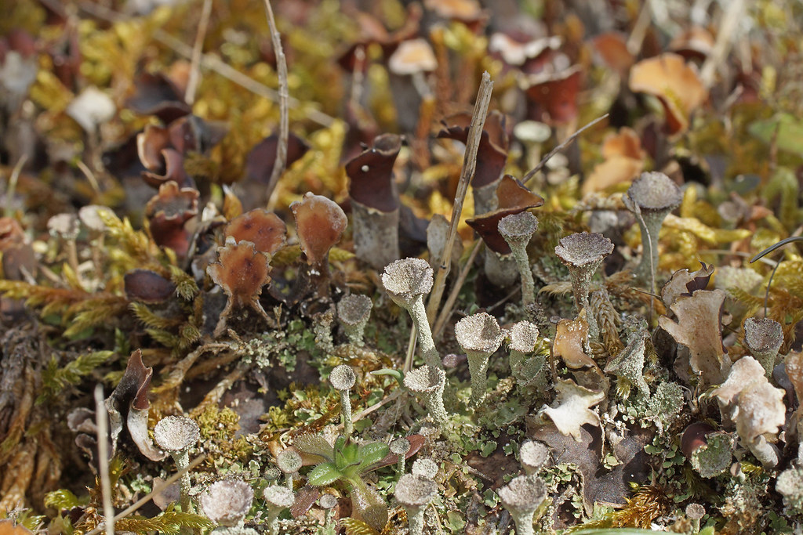
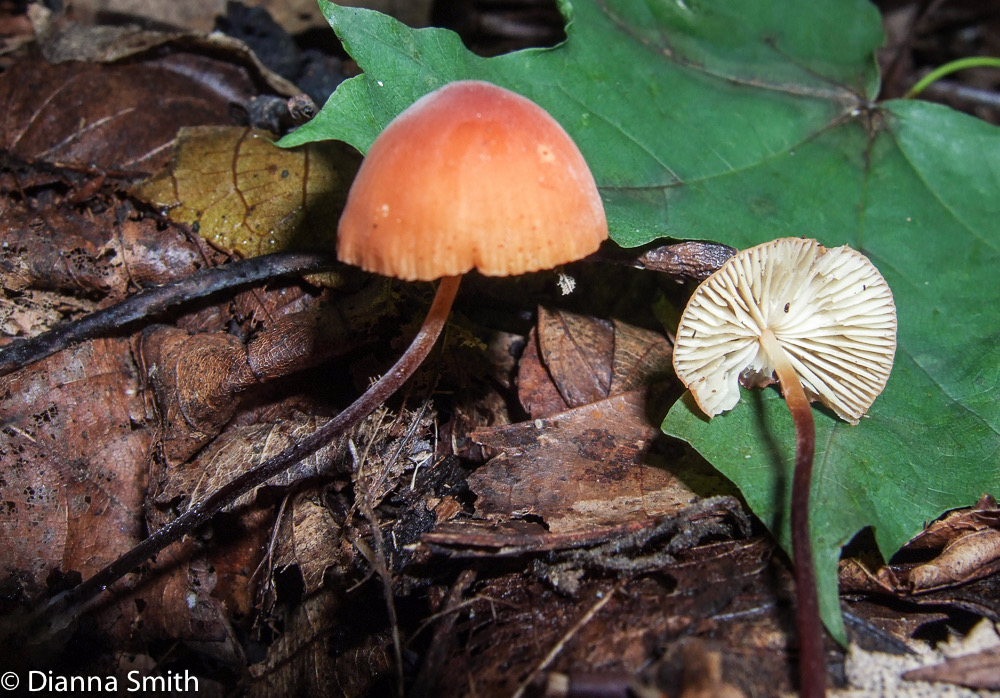

Types of
Fungi
There are many different types of fungi, and they can be broadly categorized into several groups based on their morphological and ecological characteristics. However, here they will be sorted by their most common usage.
EDIBLE
| English Name | Button Mushroom | Shiitake Mushroom | Oyster Mushroom | Morel Mushroom | Portobello Mushroom | Chanterelle Mushroom | Enoki Mushroom | Black Trumpet Mushroom | King Oyster Mushroom | Truffle Mushroom |
|---|---|---|---|---|---|---|---|---|---|---|
| Latin Name | Agaricus bisporus | Lentinula edodes | Pleurotus ostreatus | Morchella | Agaricus bisporus | Cantharellus | Flammulina velutipes | Craterellus cornucopioides | Pleurotus eryngii | Tuber spp. |
| Picture |  |  |
 |
 |
 | |||||
| Description | A widely cultivated and consumed mushroom, known for its mild flavor and versatility in cooking. | A savory and meaty mushroom, prized for its rich flavor and high nutrient content. | A delicate and tender mushroom with a light, mild flavor and a delicate texture. | A highly sought-after mushroom, known for its unique honeycomb appearance and nutty, earthy flavor. | A large, meaty mushroom with a robust, umami flavor and a meaty texture. | A brightly colored and trumpet-shaped mushroom with a fruity, slightly peppery flavor. | A long, slender mushroom with a crunchy texture and a mild, slightly sweet flavor. | A flavorful and fragrant mushroom with a smoky, earthy flavor. | A meaty and hearty mushroom with a meaty texture and a mild, nutty flavor. | A highly prized and expensive edible fungus, known for its unique flavor and aroma, and often used as a culinary luxury. |
MEDICAL
| English Name | Reishi | Chaga | Shiitake | Maitake | Cordyceps | Agarikon | Turkey Tail | King Trumpet | Lions Mane | Birch Polypore |
|---|---|---|---|---|---|---|---|---|---|---|
| Latin Name | Ganoderma lucidum | Inonotus obliquus | Lentinula edodes | Grifola frondosa | Cordyceps sinensis | Fomitopsis officinalis | Trametes versicolor | Pleurotus eryngii | Hericium erinaceus | Piptoporus betulinus |
| Picture |  |
 |
 |
 |
 |
PARASITIC
| English Name | Dutch Elm Disease Fungus | Chestnut Blight Fungus | Powdery Mildew | Rusts | Black Knot Fungus | Downy Mildew | Witch's Broom | Cedar-Apple Rust | Root-knot Nematode |
|---|---|---|---|---|---|---|---|---|---|
| Latin Name | Ophiostoma ulmi | Cryphonectria parasitica | Erysiphales | Pucciniales | Apiosporina morbosa | Peronosporales | Taphrina deformans | Gymnosporangium juniperi-virginianae | Meloidogyne spp. |
| Picture |
SYMBIOTIC
| Type | Mycorrhizae | Lichens | Endophytes | Bioluminescent | Rhizobia | Mycoparasites | Ant-Fungus Mutualisms | Mistletoe | Honey Fungus |
|---|---|---|---|---|---|---|---|---|---|
| Example | Glomus, Amanita | Cladonia, Peltigera | Neotyphodium, Acremonium | Mycena, Panellus | Bradyrhizobium, Sinorhizobium | Coniothyrium, Amylostereum | Attamyces, Leucocoprinus | Viscum, Phoradendron | Armillaria, Rhizomarasmius |
| Picture |  |  |
 |